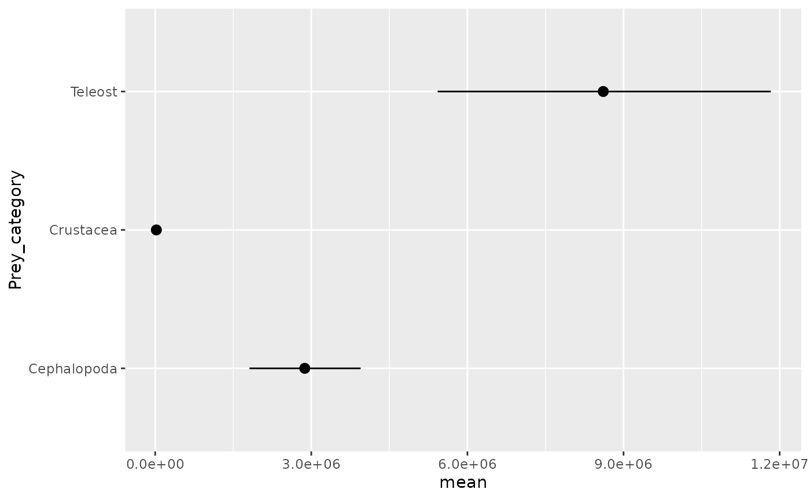
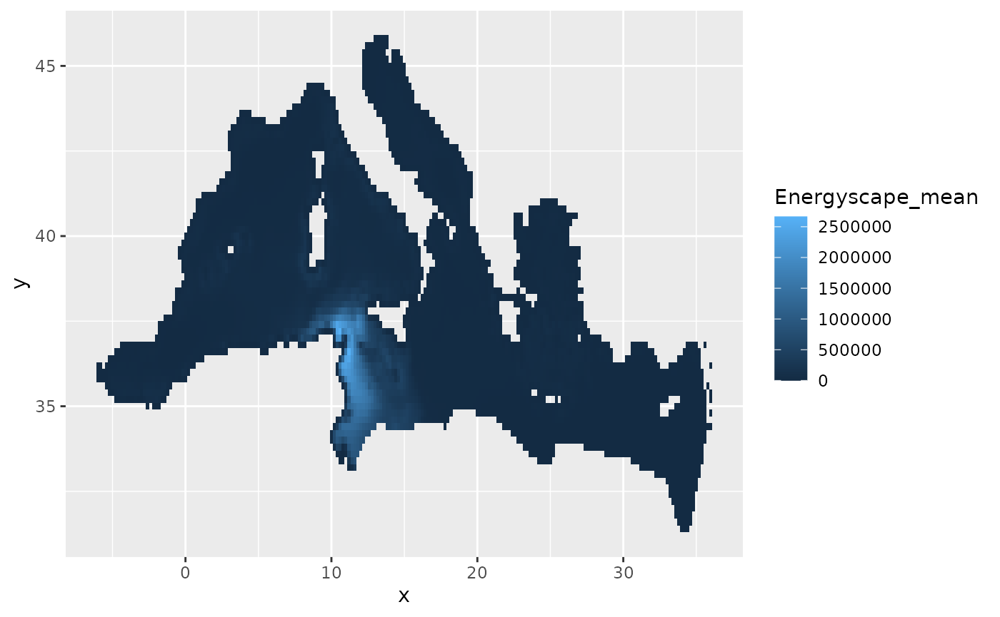

Energyscape of top predator
Source:vignettes/energyscape-of-top-predator.Rmd
energyscape-of-top-predator.RmdEstimate energyscape and biomass consumption
To estimate the energyscape and prey biomass consumption, we first
estimate the energyscape (spatialised energetic need of the population)
of a marine predator species (either cetacean, seabirds, loggerhead
turtles, sunfish, sharks, tunas or swordfish) from its abundance map and
body mass distribution, as well as the sea surface temperature (for fish
only). Second, we estimate the daily ration consumed for a given prey
group by a single predator individual and the corresponding biomass
consumed by the total population. This is done with
bio_cons_est(), which runs a single estimation, drawing one
sample from each provided distribution (body mass, abundance map,
SST).
result <- bio_cons_est(predator_group = "Cetacean",
predator_name = "TURTRU",
prey_taxonomic_level = "Taxonomic_group",
prey_group = "Cephalopoda",
diet = diet,
assimilation_rate = 0.8,
n_days = 30+31+31,
predator_weight = weight,
abundance_map = species_abundance,
temperature_map = sst,
beta = beta) # not used for fishes and seabirdsMonte Carlo simulation
To obtain the final estimations, we embed this function into a Monte Carlo simulation which runs it how many times is required to obtain a reliable estimate. This number of simulation is set to 1000 by default but can be changed by the user.
# test mc_simulation() with one prey level
TURTRU_result <- mc_simulation(predator_name = "TURTRU",
predator_group = "Cetacean",
map_coordinates = map_coords,
prey_taxonomic_level = "Taxonomic_group",
diet = diet |> subset(Taxonomic_group == "Cephalopoda"),
assimilation_rate = 0.8,
n_days = 30+31+31,
predator_weight = weight,
abundance_map = species_abundance,
temperature_map = sst, # not used for cetaceans and seabirds
beta = beta)
# test mc_simulation() with 2 prey levels
TURTRU_result <- mc_simulation(predator_name = "TURTRU",
predator_group = "Cetacean",
map_coordinates = map_coords,
prey_taxonomic_level = "Taxonomic_group",
diet = diet,
assimilation_rate = 0.8,
n_days = 30+31+31,
predator_weight = weight,
abundance_map = species_abundance,
temperature_map = sst, # not used for cetaceans and seabirds
beta = beta)
#> Computing Teleost for TURTRU
#> Computing Cephalopoda for TURTRU
#> Wrapping up
# plot results
ggplot2::ggplot(TURTRU_result$Conso) +
ggplot2::geom_pointrange(ggplot2::aes(y = Prey_category, x = mean, xmin = L10, xmax = U90))
ggplot2::ggplot(TURTRU_result$Energyscape) +
ggplot2::geom_tile(ggplot2::aes(x = x, y = y, fill = Energyscape_mean))